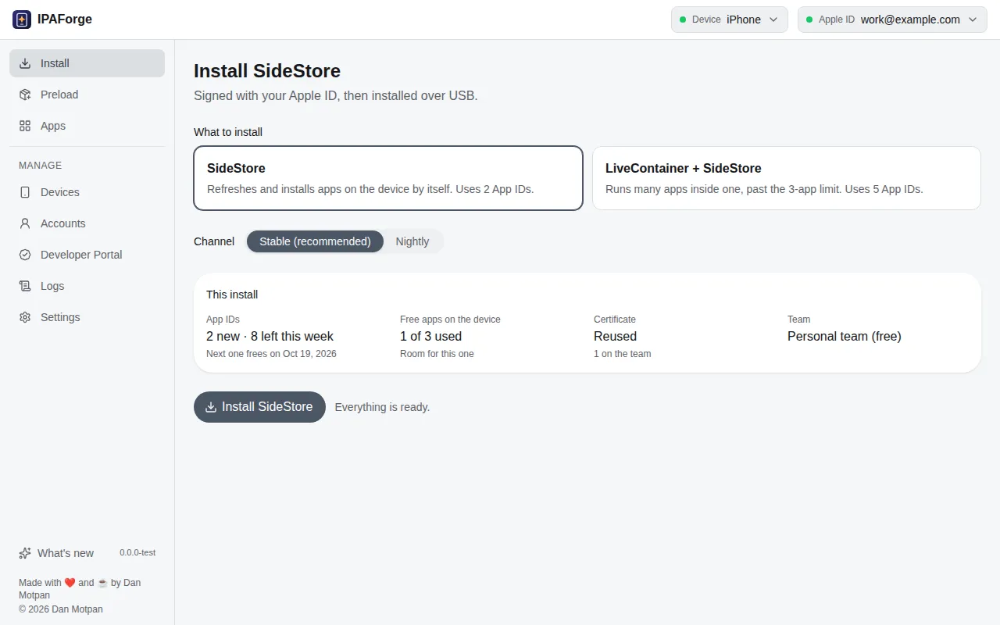
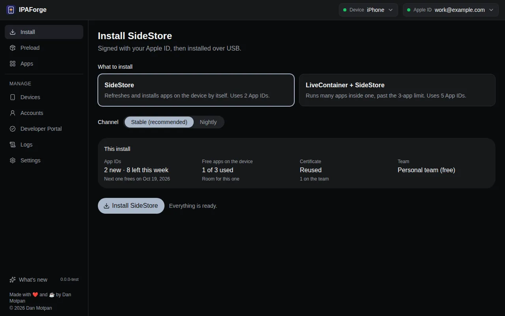

Sideload from any computer. Keep it working.
IPAForge installs SideStore and your own apps onto iPhone and iPad with a free Apple ID, from Windows, macOS or Linux. It checks everything before it changes anything, and when something fails, it tells you how to fix it.


Pick SideStore, or LiveContainer with SideStore, and see what the install will use before anything changes: App IDs left this week, free-app slots, the certificate and the team.
Free Apple ID
Apple's limits, shown before you hit them.
A free Apple ID can sideload, within rules most tools leave you to discover. IPAForge counts them for you and says what an install will use.
at a time on each device. IPAForge asks which one to replace when you reach it.
per signature. IPAForge refreshes your apps by itself before they expire.
shown before installing, with when the next one frees up.
Features
Everything sideloading needs, in one app.
One-click SideStore
SideStore, or LiveContainer with SideStore, Stable or Nightly. The pairing file and certificate are placed for you.
Preload your apps
Drop .ipa files, paste a link, or browse the catalog, SideStore's source and any AltStore-format source you add.
Apps that don't expire
See when each app expires. Refresh works like SideStore's: a new profile while your certificate is valid, nothing reinstalled.
Repair SideStore
Checks what keeps SideStore from refreshing by itself, line by line, and fixes it in one go.
QR codes for SideStore
Add a source to SideStore on your iPhone, or have SideStore install an app, by scanning a code.
A checklist for each iPhone
Trust, passcode, Developer Mode, trusting your Apple ID, LocalDevVPN: what your iOS version needs, ticked as you go.
Recovery, not dead ends
Every failure has a screen with the fixes that apply, copyable diagnostics and a pre-filled bug report.
Several Apple IDs
Kept in your system keychain, free and paid teams, with a quick switch when Apple blocks one on a device.
Updates itself
A new version installs when IPAForge opens, after its release signature checks out, and What's new tells you what changed.
Your language, your look
Six languages, right to left included, and six colour themes in light and dark.
How it works
Three steps to SideStore.
Plug in your iPhone
Unlock it and tap Trust. The checklist shows what else your iOS version needs, like Developer Mode.
Sign in with your Apple ID
A free account works. Your password goes only to Apple, and saved Apple IDs stay in your system keychain.
Install
IPAForge signs SideStore, places its pairing file and certificate, and installs it, showing every step as it goes.
Open by design
You can read every line, and check every download.
- All TypeScript, no closed helpers. Code signing, talking to the device and signing in to Apple are written from scratch and open to read.
- Signs like Apple. The signer's output matches Apple's own codesign byte for byte on its test fixtures, and Apple's verifier accepts it.
- Signed releases. Every file of every release carries a Sigstore signature from the release workflow, and IPAForge checks it before installing an update.
- MIT licensed. Free to use, study and build on.
# check a download yourself $ cosign verify-blob \ --bundle IPAForge-0.1.0-alpha.4-mac-arm64.dmg.sigstore.json \ --certificate-identity-regexp \ '^https://github.com/SirReaDy/ipaforge/.github/workflows/release.yml@' \ --certificate-oidc-issuer https://token.actions.githubusercontent.com \ IPAForge-0.1.0-alpha.4-mac-arm64.dmg Verified OK # what the app logs before an update installs [info] the update is signed by IPAForge's release
Roadmap
Where IPAForge is going.
The engine and the app
Signer, device layer, Apple sign-in, developer services, the installer and the interface.
Install and preload
One-click SideStore, app sources, the Apps page, Repair SideStore, QR codes, the checklist.
Desktop app
Installers for every system and automatic updates are in. Windows code signing and Apple notarisation are next.
Guided first run
A step-by-step setup the first time you open IPAForge.
Management tools
Certificates, App IDs, pairing files per app, and .p12 import and export.
Wireless and remote pairing
Installs over Wi-Fi, and the iOS 17+ remote pairing file for SideStore.
1.0
A docs site, more languages and a security review.
FAQ
Good to know.
Is IPAForge free?
Yes. IPAForge is free and open source under the MIT license, and a free Apple ID is enough to use it.
Why does macOS or Windows warn me when I open it?
IPAForge isn't notarised by Apple or code-signed for Windows yet. On macOS, open it once, then choose Open Anyway in System Settings › Privacy & Security. On Windows, choose More info › Run anyway. Both are on the roadmap.
What do I need on Windows and Linux?
On Windows, install Apple Devices from the Microsoft Store, so your computer can talk to the iPhone. On Linux, install usbmuxd.
Which iPhones and iPads work?
iOS 15 or later with a passcode. On iOS 16 and later, Developer Mode must be on; the checklist shows you how.
Where does my Apple ID password go?
Only to Apple. If you choose to save it, it stays encrypted in your system keychain on your computer.
Is IPAForge part of SideStore?
No. IPAForge is an independent project that installs SideStore and works alongside it. It isn't affiliated with SideStore or Apple.
Get IPAForge.
Free for Windows, macOS and Linux. It keeps itself up to date.